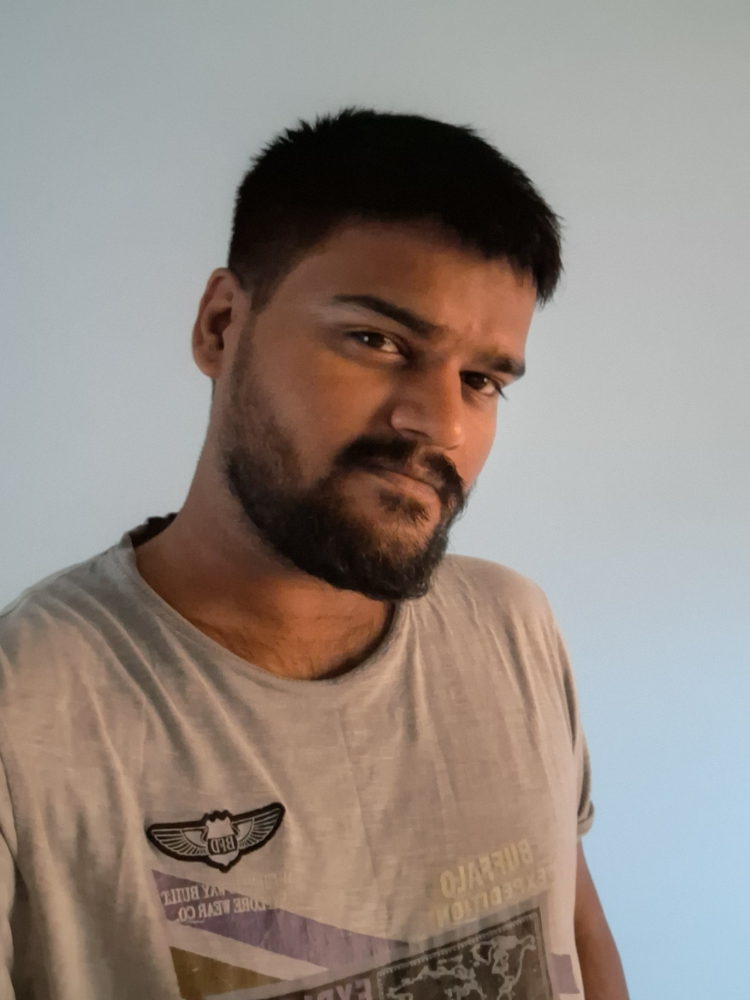

01 / Collision signatures
Reading a collision
A conceptual event display: particle tracks radiate from an interaction point through layers of a detector.
Exploring the universe at the intersection of high energy physics and artificial intelligence—with a curiosity for the fields that connect it all.
PHYSICS-DRIVEN. COMPUTATION-POWERED. CURIOSITY-LED.
Tracks, interactions and the small signatures that inspire big questions.
A conceptual event display: particle tracks radiate from an interaction point through layers of a detector.
A schematic Z-boson decay into a muon and an antimuon—a small glimpse of the interactions studied in particle physics.
Conceptual illustrations only; these are not experimental events or simulation results. The decay sketch is not a complete Feynman diagram.
From recovering particle-level information to building tools that make physics more accessible.
Comparing Deep Neural Networks, Energy Flow Networks and Particle Transformers to investigate their capabilities for high-dimensional unfolding.
Working on detector simulation using a proposed design and machine learning for reconstruction. Initial work includes a simplified CMS detector simulation in Python.
I study how CaloDiffusion represents a particle shower in a calorimeter. I analyze the model’s output and visualize where it places energy across detector cells to interpret the simulated response.
Supervised by Dr. Liv Helen Vage, Princeton University.
The unfolding and muon collider projects are guided by Prof. Biplob Bhattacherjee, CHEP, IISc · June 2025–present. Graphics are conceptual illustrations.
An educational web app with 11 physics experiment simulations, a numerical solver, an AI doubt-clarifying chatbot and quizzes. Notebook exports support continued learning, while sonification and visualization aids support accessibility.

I’m Vishal S—a polymath, autodidact and independent researcher whose curiosity moves between physics, mathematics, AI and the arts.
My interests span high energy physics, particle cosmology, astroparticle physics and the application of AI and machine learning in research. I enjoy connecting fundamental questions with computational approaches—and sharing that curiosity with others.
I’m teaching myself quantum field theory and agentic AI through hands-on work and YouTube tutorials, rather than formal courses in these subjects. Building, experimenting and working through questions are central to how I learn.
Explore my GitHub →St. Joseph’s University · Bengaluru
Physics, Mathematics & Chemistry
MES College of Arts, Commerce and Science
Affiliated to Bengaluru City University
SDM Residential PU College · Dakshina Kannada
Python · PyTorch · Machine learning
Data analysis · Advanced statistics
Data visualization · Web app development
Linux · LaTeX / Overleaf
IRAF · DS9 · Quantum ESPRESSO
Quantum computing workshop experience with Qiskit
Problem solving · Adaptability
Leadership · Team management
Scientific communication & outreach
Learning from research communities, looking up at the night sky, and helping others find their way into science.
Former Vice President of MES Astronomy Club. Conducted stargazing events and student sessions with Dobsonian and equatorial-mount telescopes.
Attended the ML4HEP pre-school and main school at TIFR, Mumbai, and the seven-day HSF-India Scientific Computing Workshop at CHEP, IISc.
Participated in Google’s JAPAC Cohort-3 Ideathon and completed the Google Cloud Gen AI Academy roadmap, building agents, chatbots and virtual assistants.
Participated in physics and astrophysics conferences, including Frontiers of Astrophysics and Cosmology 2026, Next-Gen Materials, and the University of Tennessee’s online HEP and Astrophysics Summer Conference.
Awarded for presenting an original scientific idea at the DST-INSPIRE Science Internship Camp organized by Mangalore University.
Participated in the OpenAI Experience Lab hosted by Global App Testing in Bengaluru, discussing ChatGPT user experience and AI applications in research.
For me, being an autodidact is a way of approaching the world: following a question, trying something unfamiliar, and learning by doing. That spirit extends well beyond research.
I have a keen interest in music and am learning to play the ukulele—one chord, one song and one practice session at a time.
I’m a self-taught cook. The kitchen is another place where I get to explore, experiment and learn through hands-on work.
I write short verses, giving experiences and observations a different form—sometimes a few lines are where a thought finds its voice.
On Substack, I share my experiences, views and commentary on research, artificial intelligence and the many other things that catch my attention. It’s a space for reflection, questions and ideas beyond the research notebook.
Read my Substack →Let’s talk physics, intelligent tools, music, writing—or an interesting idea.